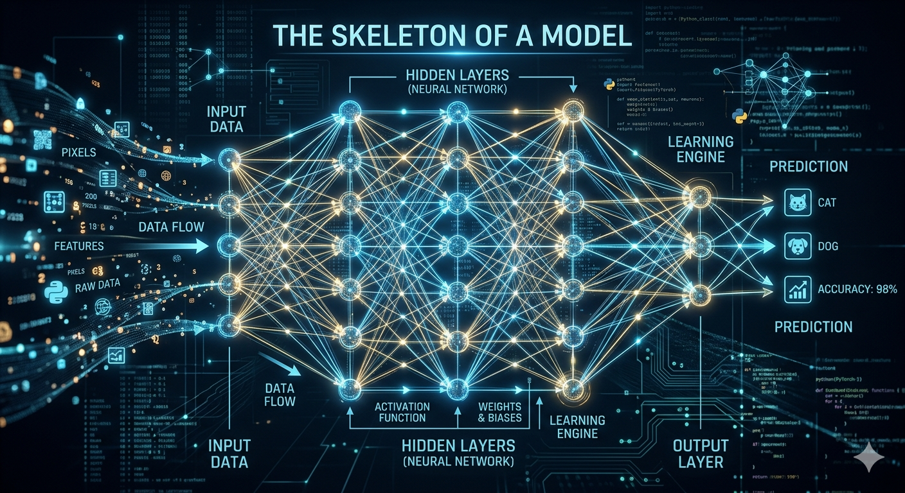

How LLMs Work
A first-principles mental model — architecture first, then the levers you can pull.

This page is the whole mental model in one sitting (~30 minutes). Every section ends with a → go deeper link to a dedicated page if you want more. The artifact treats the vanilla decoder-only transformer (the GPT family) as the baseline; deviations like Mixture-of-Experts, multimodal, or encoder-decoder appear as variant notes on the deep pages where they most naturally attach.
The shape of an LLM — hover a box for a definition, click it to jump to that section
" on" to input → run again → predict next token
0. So what is an LLM, really?
An LLM is a function. You hand it a sequence of text. It hands you back, for every possible next token, a number — how strongly it predicts that token comes next. Pick one of those tokens, append it to the sequence, and ask again. Keep going until you've grown the answer you wanted.
An LLM is a writer who can only do one thing: stare at everything written so far, then mumble the most plausible next word. They do that over and over, building the answer one word at a time. The whole rest of this page unpacks that one phrase: called in a loop.
That's it. Everything else — attention, training, fine-tuning, quantization — is in service of making that one function and that one loop produce text you actually want.
go deeper into the inference loop1. Words don't fit in math — so we cheat: tokens, embeddings, and position
A model can't multiply "hello". It can multiply numbers. So before anything else, every piece of text gets converted into numbers in three layers.
Tokens
Text is chopped into small pieces called tokens, and each piece is mapped to an integer ID from a fixed vocabulary (typically 50,000–200,000 entries). Tokens are usually sub-word: "unhappiness" might become ["un", "happiness"] or even ["un", "happi", "ness"]. Common words are single tokens; rare words split into pieces.
Tokens are like a giant phrasebook. Each entry has a number. "the" is entry 1820. The smiley face 🙂 is entry 47812. Most entries aren't whole words — they're fragments that compose into words, like Lego bricks for language.
Embeddings
Each token ID is then mapped to a vector — a list of (typically) a few thousand numbers. This vector is the token's embedding: its location in a high-dimensional "meaning space." The crucial property: tokens with related meanings end up near each other in this space.
Embeddings are coordinates on a meaning map. "king" and "queen" sit near each other; both are far from "banana". Famously, the direction from "king" to "queen" is similar to the direction from "man" to "woman" — meaning becomes geometry.
Position
Here's a wrinkle most explanations skip too long: by themselves, embeddings don't tell the model which token came first. "Dog bites man" and "man bites dog" would look identical to the model. So position information has to be injected separately — either added to the embedding, or (in modern models) baked into the attention mechanism via a trick called RoPE (rotary positional embedding).
Position encoding is like timestamping each word as you write it. RoPE in particular: imagine each embedding as a tiny arrow. The model rotates each arrow by an amount that depends on its position. Two arrows that started identical now point differently if they were at different positions — and the model can read the angle difference to know "how far apart were these two tokens?"
2. Tokens have a group chat: attention
Now we have a sequence of position-aware vectors. The next problem: how does each token know what other tokens in the sequence say? In "The cat sat on the mat because it was warm", what does "it" refer to — cat or mat? The model needs a way for tokens to look at each other.
That mechanism is attention. For every pair of tokens (A, B), attention computes a score: how much should A pay attention to B when refining its own meaning? Then A updates itself by taking a weighted average of all the other tokens, weighted by those scores.
Imagine a roomful of people standing in a circle. Each person silently asks "who here is talking about something I care about?". Each person also wears a name-tag describing what they're talking about. Each person decides who to listen to based on how well the others' name-tags match their own question — then they take a weighted average of what those people are saying.
That's attention. Three ingredients per token:
- Query (Q) — the question I'm asking
- Key (K) — the name-tag I'm advertising
- Value (V) — what I'll actually contribute if you decide to listen
For each token, the model computes its Q, K, and V from its current vector. Then the score from token A to token B is "how well does A's Q match B's K?". Run that for every pair, normalize, and use those scores to mix everyone's V into A's new vector.
The "meeting room" picture suggests attention happens once. In a real model, this whole process happens for every token, in every layer (often dozens of layers stacked), and each layer has multiple parallel "rooms" called heads — each looking for different patterns. So instead of one meeting, picture thousands of simultaneous meetings, all running in parallel.
Multi-head attention
A single attention computation captures one kind of relationship at a time. So real models run attention several times in parallel, with different learned Q/K/V projections. Each parallel run is a head. One head might learn to track grammatical subject-object relationships. Another might track "what entity is this pronoun referring to?". Another might track distance ("which word came right before me?"). The heads' outputs are concatenated and mixed.
go deeper into attention, heads, and the causal property3. Same conversation, sixty times in a row: the transformer block
One round of attention isn't enough. Modern LLMs stack the same operation dozens of times — Llama 3 70B has 80 layers; GPT-4 is reportedly more. Each layer is called a transformer block, and each block does roughly the same thing:
- Attention — tokens look at other tokens (as in §2)
- Add & norm — the result is added back into the running representation, then normalized
- MLP — each token, on its own, runs through a small feed-forward neural network: think of it as the token "thinking privately" about what it just heard
- Add & norm — again
The output of one block becomes the input of the next. Repeat N times.
Imagine editing a document in many passes. Pass one: spot grammar issues. Pass two: tighten flow. Pass three: check facts. Pass four: notice the tone is off. Each pass sees the previous pass's edits and adds its own. Layer count is roughly "how many editing passes does this model get?"
The tokens themselves don't move — what changes is the vectors attached to them. Early layers tend to capture syntactic features (what part of speech is this? what comes before/after?). Late layers tend to capture semantic, task-relevant features (does this token complete the answer the user wants?).
The residual stream
Each block doesn't replace the token's vector — it adds to it. The vector flowing up through all the layers is called the residual stream. Every layer reads from it, computes a contribution, adds the contribution back in, and passes it on. Nothing is erased; everything is elaborated.
The residual stream is a shared whiteboard running through the whole model. Each layer reads what's already on the whiteboard, adds its own notes in the margin, and passes it up. By the top, the whiteboard is dense with annotations — each layer's contribution still legible if you knew where to look.
4. From hidden state to next token: the full inference loop
We've walked through the inside of the model. Now let's walk the full loop end-to-end — input text to next token to next next token. This is the part most explanations leave fuzzy.
One full pass produces one token. To produce a paragraph, the loop runs hundreds of times.
Prefill vs decode
The very first time you call the model, it processes your entire prompt in one parallel forward pass — every token at every layer at the same time. This is the prefill phase. It's expensive but parallel-friendly.
After that, every new token requires its own forward pass: feed in just the new token, get one new token out. This is decode, and it's serial — token N+1 depends on token N existing first. This is why streaming responses appear word-by-word, and why you pay different prices for input and output tokens.
Prefill is like silently reading the entire question before answering. Fast and parallel — your eyes can scan the whole page at once. Decode is like then speaking the answer aloud, one word at a time. Slow and serial — you can't say word seven before word six is out of your mouth.
The KV cache
If decode just kept re-running the whole forward pass over the entire sequence for every new token, it would scale terribly — generating 1,000 tokens would mean a thousand passes over a sequence that grows each time. The trick: most of the work for past tokens doesn't change. Their K and V vectors (from §2) can be cached and reused.
So during decode, the model only computes Q, K, V for the new token. The new token's Q attends over all the cached past K's and V's. Past tokens are never recomputed — but they're still attended over. That's the KV cache.
The KV cache is your conversation notes. To say each next sentence, you don't re-read the whole prior transcript — you glance at your notes (the cache), think about the new thing you want to say, and speak. The notes grow as the conversation grows.
5. Four lenses for thinking about LLMs
Before we look at training and the levers, here's a sorting framework. When something interesting (or broken) happens with an LLM, it's almost always one of four categories. Confusing them is the single most common source of wrong diagnoses.
🧠 Weights
What the model knows because of training. Frozen at training time; loaded into memory at inference. Changing weights = teaching new behavior or knowledge.
📜 Context
What the model sees in this turn — the input window, the chat history, any retrieved documents you stuffed in. Changes per request. Forgotten between requests.
🛠 Scaffolding
What the system around the model does — system prompts, retrieval, tool calls, multi-step agent loops. Doesn't change the model; changes what reaches the model and what happens with its output.
🎲 Decoding
What the sampler chooses from the model's output distribution — temperature, top-k, top-p. Doesn't change the model; changes how its raw probability output becomes a single token.
Why this matters
Same complaint, very different fixes:
- "The model gave a different answer this time." → decoding (temperature). Set temp=0.
- "The model forgot what I said earlier." → almost always context (rolled out of window) or scaffolding (history not passed in). Almost never the model itself.
- "The model is confidently wrong about a fact." → likely weights (it never knew). Fix with retrieval (scaffolding) or fine-tuning (weights).
- "The model ignored my tool definition." → scaffolding (your tool description) or weights (model wasn't trained well for tool use). Almost never decoding.
Diagnosing a model is like diagnosing a restaurant complaint. Was it the chef's training (weights)? The ingredients you brought in (context)? The maître d's instructions to the kitchen (scaffolding)? Or the dice the chef rolled when picking the last spice (decoding)? Same dish, four very different fixes.
The KV cache and intermediate activations live during one forward pass and disappear. They're transient computation state, not knowledge (weights) and not your input (context). When someone says "the model forgot," they almost never mean the cache — they mean the context window or scaffolding. Don't confuse them.
6. How a model goes from "predicts the internet" to "answers your email"
Everything above describes how the model runs. Now: how does a model become any good in the first place? Modern LLMs go through three roughly distinct training stages — and each stage shapes the model in a different way. weights
Pretraining
Take an enormous pile of text — hundreds of billions to trillions of tokens scraped from the internet, books, code, papers. Train the model to do one thing: predict the next token. For every token in the corpus, ask "given everything before, what's the next one?" and nudge the weights to be a little less wrong each time. Repeat for weeks on thousands of GPUs.
What emerges, surprisingly, is not just next-token prediction — it's understanding. To predict the next word in a math problem, the model has to learn arithmetic. To predict the next line in a code file, it has to learn programming. To predict the next sentence in a story, it has to learn narrative structure. Capability is a side effect of really good prediction.
Pretraining is reading the entire library. You don't know what any one book is for, and nobody tested you. But by the time you finish, you've absorbed how language works, what facts are true, what arguments tend to follow what claims. You're an oracle who has read everything but has no idea what anyone wants.
Supervised fine-tuning (SFT)
A pretrained model is a strange creature: ask it "What is the capital of France?" and it might continue "is a question often asked in geography classes…" — because that's a plausible internet continuation. To make it answer questions instead of continuing them, train it on a curated dataset of (prompt, ideal-response) pairs. Same loss function as pretraining; just very different data.
SFT is an apprentice mimicking a master. You show them ten thousand worked examples — "here's a question, here's how a helpful answer looks." The apprentice learns the shape of helpful response. They were already a good writer; now they know to format like an assistant.
RLHF / DPO
SFT teaches the model what helpful answers look like, but it can't teach preferences — concise vs verbose, careful vs confident, this style vs that style. So a final stage shows the model pairs of its own outputs and tells it which one humans preferred, then nudges it toward producing more of the preferred style. Reinforcement Learning from Human Feedback (RLHF) does this via a reward model; Direct Preference Optimization (DPO) does it more directly without a separate reward model. Either way, the model learns the judges' taste.
RLHF is the apprentice tasting their own dishes and being told which one tastes better. Over many tastings, they internalize the judges' palate. They start cooking food the judges would like, even on dishes nobody has tasted yet.
7. How do we know a change helped?
Every lever we're about to discuss is a change to the model or the system. Fine-tuning, quantizing, extending context, swapping decoding settings — each one is supposed to make things better. How do we tell? That's evaluation.
There's no single right answer. Different evals measure different things, and all of them have known holes:
- Perplexity — how well the model predicts held-out text. Cheap to compute. Measures raw prediction quality but not instruction-following, helpfulness, or safety.
- Multiple-choice benchmarks (MMLU, ARC, GSM8K) — a battery of test questions. Easy to score, easy to game. Often contaminated: the test questions leak into training data, so high scores don't always mean real capability.
- LLM-as-judge (MT-Bench) — one model grades another's outputs against criteria. Cheap and fast. Biased toward the judge's preferences.
- Preference / arena (LMSYS Chatbot Arena) — humans pairwise-rank outputs from two anonymous models. Captures real-world taste. Slow, expensive, hard to attribute scores to specific capabilities.
The crucial pairing: each lever needs a matching eval. Quantize? Run perplexity + your task eval before/after. Fine-tune? Preference plus a held-out general eval (so you catch forgetting). Extend context? Long-context retrieval probes like Needle-in-a-Haystack. Without a matched eval, you're shipping a change blind.
Picking a model is rarely "look at one number." It's a basket of evals plus your own task-specific testing plus, honestly, vibes. Eval doesn't change the model — it's how you measure changes from any of the other lenses.
go deeper into eval methods, contamination, and matching evals to levers8. Knobs you can turn after the model is trained
Once a model exists, you have several distinct ways to change what it does. Each one touches a different lens.
Fine-tuning
weights
Mechanism: show the model new examples; gradient descent updates weights. Full fine-tune updates all of them; LoRA learns a small low-rank "delta" attached to specific weight matrices and leaves the base alone. Effect: new behavior or knowledge baked in. Risk: forgetting other things ("catastrophic forgetting").
Quantization
weights — representation
Mechanism: store each weight in fewer bits (16 → 8 → 4). Same number of weights; coarser numerical resolution. Effect: 4× smaller and often faster, with small accuracy loss if done carefully (GPTQ, AWQ). Doesn't teach new behavior — just compresses what's already there.
Context extension
context
Mechanism: stretch the positional encoding (RoPE scaling) so old position formulas cover new lengths, and/or restructure attention (sliding window). Effect: the model accepts more tokens. Cost: KV cache grows linearly, attention compute grows quadratically, and quality often drops past the originally trained length.
Pruning
weights — structure
Mechanism: remove weights — either individual ones (unstructured) or whole heads/layers (structured). Effect: smaller, faster model. Almost always followed by a "healing" fine-tune to recover lost quality. Useful when quantization alone isn't enough.
Decoding controls
decoding
Mechanism: reshape the probability distribution before sampling. Temperature flattens (more random) or sharpens (more deterministic). Top-k / top-p truncate the tail of unlikely options. The model is unchanged. Confusing decoding settings with model quality is the most common diagnostic mistake.
Where to go from here
- If you want to fine-tune → levers.html §1
- If you want to extend context → levers.html §3
- If you want to quantize / shrink the model → levers.html §2
- If you want to understand inference cost / pricing → inference.html
- If something is breaking and you don't know why → diagnosis.html
- If you're picking a model → eval.html, then diagnosis.html for stress tests
- If you want a vocabulary refresher → glossary.html